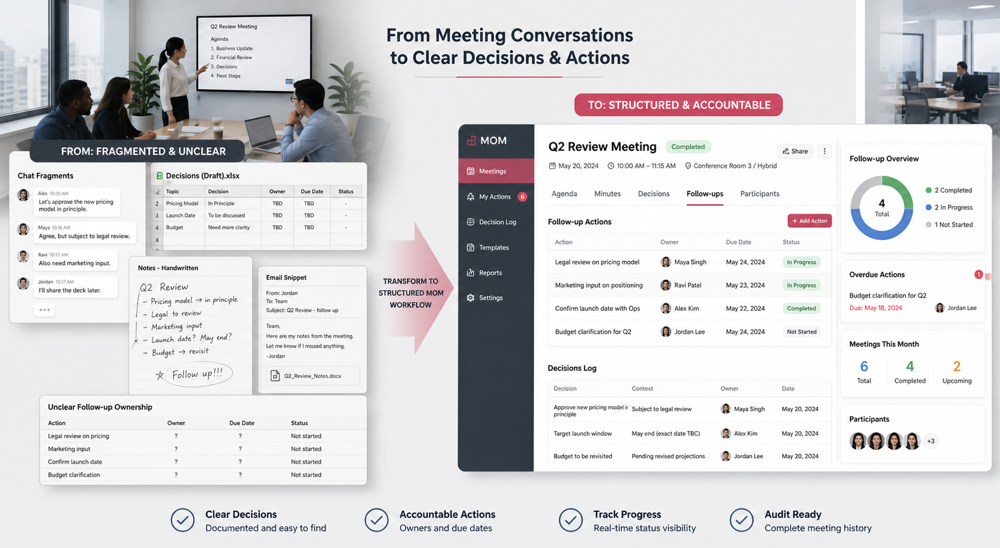

Flagship Project • Internal Collaboration Workflow
Mom (Minute Of Meeting Online)
Meeting workflow platform for scheduling, documenting outcomes, and tracking internal follow-up actions.
Workflow Illustration

MOM restructures meeting handling from fragmented conversation artifacts into a workflow with agenda setup, minutes capture, decision logging, action ownership, due dates, and follow-up visibility. The goal is not just storing notes, but making post-meeting execution clear and accountable.
Business Problem
Meeting decisions and follow-up tasks easily fragment across chat, spreadsheets, and manual notes, making ownership and completion harder to review later.
My Role & Ownership
Independently built the structured workflow and interface for meeting scheduling, minute capture, decision tracking, and follow-up visibility using Laravel, React, Inertia.js, and MySQL.
Operational Flow
- Meeting agenda and session details are prepared in one place.
- Discussion outcomes are converted into minutes and decision records.
- Follow-up actions are assigned to owners with due dates and status visibility.
- Progress can be reviewed without reopening scattered chat history or spreadsheet notes.
Key Capabilities
- Structured minute capture and decision logging.
- Follow-up ownership and deadline visibility.
- Meeting-centered action tracking workflow.
- Searchable and reviewable collaboration history.
Tech Stack
Laravel, React, Inertia.js, MySQL, Tailwind CSS.
Current Status
Status: Internal collaboration workflow focused on making decisions, follow-up actions, and review history more structured than conventional meeting recap habits.


Privacy note: repository, credentials, and internal organizational data remain private.